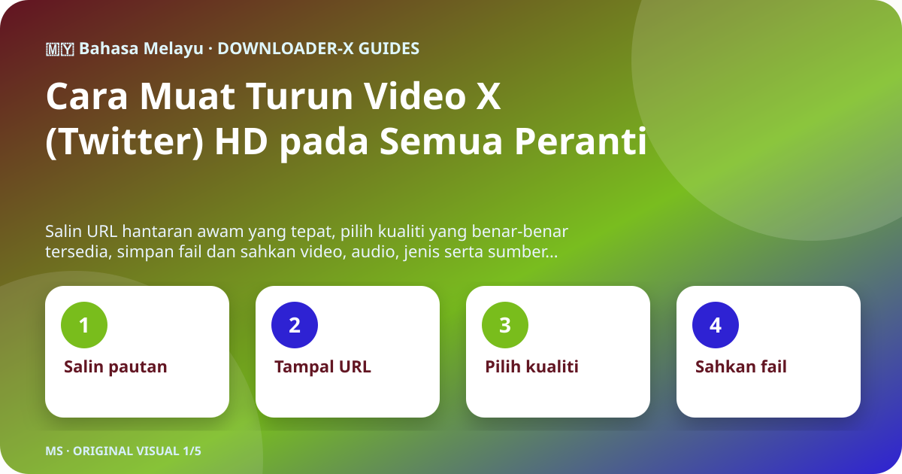
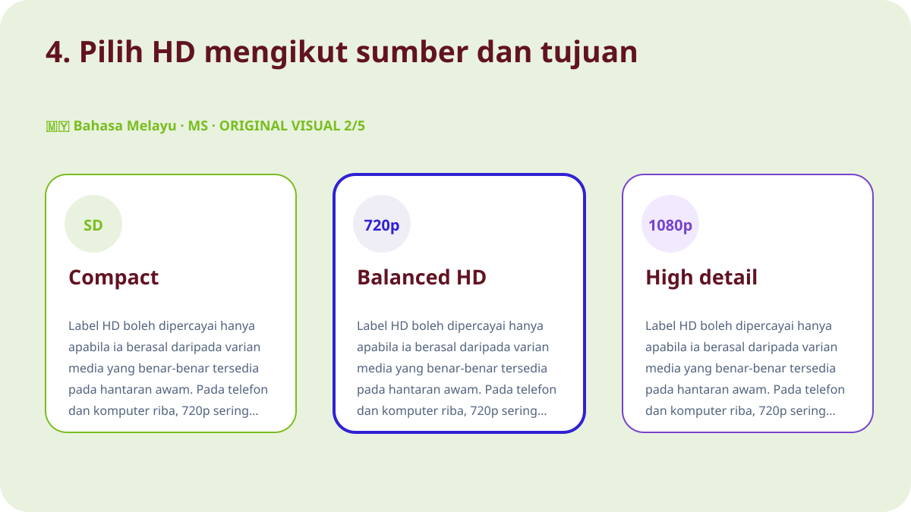
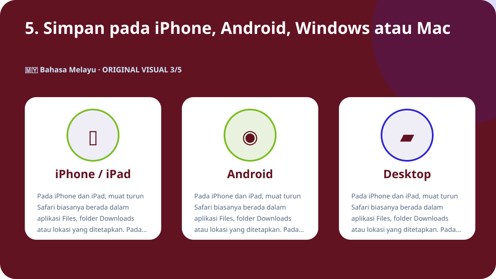
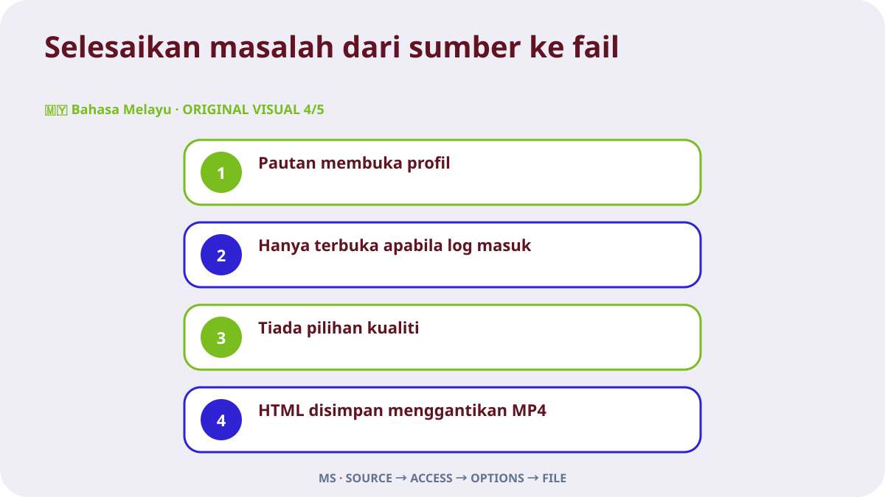

Jawapan ringkas
Buka hantaran X individu yang mengandungi video, pastikan ia boleh dilihat secara awam dan gunakan menu Kongsi untuk menyalin pautan hantaran. Tampal URL itu dalam Downloader-X, pilih varian MP4 yang benar-benar dipaparkan dan mainkan awal, tengah serta akhir selepas disimpan. Gunakan proses ini hanya untuk video sendiri, media berlesen sesuai atau kandungan yang diberi kebenaran jelas. Pemprosesan pautan awam tidak memerlukan kata laluan X, kod pengesahan, kuki pelayar atau akses jauh.

1. Semak akses awam dan hak penggunaan
Mulakan daripada hantaran asal, bukan profil, hasil carian, tangkapan skrin atau pratonton yang dihantar semula. Buka URL dalam tab baharu dan padankan akaun, teks, imej kecil serta tempoh. Keterlihatan awam ialah tetapan akses, bukan kebenaran automatik untuk menerbitkan semula, menyunting, menjual atau menggunakan dalam iklan. Jika akaun dilindungi, hantaran dipadam, akses khas diperlukan atau kandungan disekat, berhenti dan minta salinan yang dibenarkan daripada pemilik tanpa memintas kawalan.
Hak cipta, persetujuan dan kredit
Keterlihatan awam ialah tetapan akses, bukan lesen. Simpan video sendiri, media berlesen serasi atau kandungan yang jelas dibenarkan. Untuk menerbitkan semula, menyunting atau penggunaan komersial, pastikan kebenaran meliputi tujuan dan simpan bukti bertulis. Hormati orang, maklumat peribadi, lokasi sensitif dan kanak-kanak dalam video serta jangan mendakwa karya orang lain sebagai milik sendiri.
2. Salin URL hantaran yang tepat
Pautan input mesti menunjuk kepada satu hantaran yang mempunyai video. Dalam X, buka Kongsi dan salin pautan hantaran, kemudian uji sekali dalam tab baharu. URL profil atau garis masa mengandungi banyak hantaran dan tidak mengenal pasti media sasaran. Semakan kecil ini membezakan pautan salah daripada gangguan perkhidmatan dan mengurangkan klik berulang yang menghasilkan fail separa atau pendua.
- Buka hantaran video asal pada halaman individu.
- Gunakan Kongsi untuk menyalin pautan tanpa menaip URL sendiri.
- Pastikan domain x.com atau twitter.com dan alamat hantaran.
- Buka dalam tab baharu dan padankan akaun, teks, imej kecil serta video.
- Simpan URL sumber dan bukti kebenaran bersama fail.
3. Tampal pautan dan pilih keputusan sebenar sahaja
Tampal URL yang telah disemak ke pemuat turun X dan mulakan pemprosesan sekali. Tunggu pilihan sebenar lalu bandingkan tajuk atau pratonton dengan hantaran asal. Pilih hanya format dan resolusi yang benar-benar muncul. Jangan anggap dakwaan 4K, 1080p atau tanpa watermark sebagai kemampuan sebenar jika sumber tidak menawarkannya. Jika gagal, mesej ralat yang jelas perlu dipaparkan; halaman HTML, pemasang atau fail salah tidak boleh ditandakan sebagai video berjaya.
Video demonstrasi asli Bahasa Melayu
Video ini dicipta khusus untuk halaman ini dengan imej, warna dan teks yang tidak berulang dalam bahasa lain.
4. Pilih HD mengikut sumber dan tujuan
Label HD boleh dipercayai hanya apabila ia berasal daripada varian media yang benar-benar tersedia pada hantaran awam. Pada telefon dan komputer riba, 720p sering menyeimbangkan kejelasan, data dan ruang; 1080p berguna pada skrin besar apabila sumber benar-benar menyediakannya. Dua fail dengan resolusi sama boleh berbeza bitrate, codec dan mampatan, jadi mainkan fail dan jangan menilai melalui nama sahaja. Jika audio diperlukan, pilih pilihan gabungan video dan bunyi serta semak trek selepas disimpan.

5. Simpan pada iPhone, Android, Windows atau Mac
Pada iPhone dan iPad, muat turun Safari biasanya berada dalam aplikasi Files, folder Downloads atau lokasi yang ditetapkan. Pada Android, semak senarai muat turun pelayar atau aplikasi Files. Pada Windows, macOS, Linux dan ChromeOS, lihat folder Downloads serta sejarah pelayar sebelum klik semula. Jika ruang tidak cukup, padam salinan yang tidak perlu atau pilih resolusi lebih rendah. Jangan pasang pengurus muat turun tidak dikenali hanya kerana halaman mendakwa ia wajib.

6. Sahkan fail yang disimpan
Tugas selesai apabila fail dibuka sebagai video sebenar, bukan apabila bar kemajuan hilang. Sebelum arkib atau kongsi, semak:
- Jenis fail sepadan dengan pilihan, seperti MP4, bukan HTML atau pemasang.
- Saiz bukan sifar dan munasabah bagi tempoh serta kualiti.
- Awal, tengah dan akhir memainkan gambar, tempoh dan audio dengan betul.
- Nama, folder, URL sumber dan kebenaran telah direkodkan.
Rekod sumber sebelum simpan jangka panjang
Untuk projek dengan banyak klip, catat akaun, tarikh, URL kekal, penerangan pendek, varian dipilih, saiz dan asas kebenaran. Ini mengelakkan fail tanpa asal dan memudahkan semakan kredit atau lesen. Dalam quote post, balasan atau thread, salin URL hantaran yang benar-benar mengandungi video, bukan yang sekadar menyebut atau memetiknya.
Selesaikan masalah dari sumber ke fail

Pautan membuka profil
Kembali ke hantaran video dan salin melalui Kongsi; profil tidak mengenal pasti satu media.
Hanya terbuka apabila log masuk
Kandungan mungkin dilindungi atau terhad. Jangan beri kelayakan atau kuki; minta salinan yang dibenarkan.
Tiada pilihan kualiti
Pastikan hantaran masih ada, mempunyai video asli dan terbuka melalui URL; segarkan sekali.
HTML disimpan menggantikan MP4
Padam fail, jangan ubah sambungan dan semak semula URL serta pilihan video sebenar.
Video tiada bunyi
Semak sumber, kelantangan dan pemain dipercayai lain; pilih varian gabungan jika perlu.
Keselamatan dan privasi
Aliran pautan awam tidak memerlukan kata laluan X, kod dua faktor, kuki dieksport, kawalan jauh, fail boleh laku atau perlindungan peranti dimatikan. Berhenti jika halaman menawarkan .exe, .dmg atau sambungan tidak berkaitan. Semak domain, jenis dan sumber sebelum membuka. Pada peranti kongsi, pindahkan fail dibenarkan daripada folder awam dan padam salinan sementara yang tidak diperlukan.
Susun fail dan elakkan pendua
Gunakan nama dengan topik ringkas, akaun, tarikh dan kualiti, contohnya topic_creator_2026-08-30_720p.mp4. Asingkan folder sementara dan disahkan serta simpan varian perlu sahaja. Klik berulang tidak meningkatkan kualiti; biasanya ia membuat pendua atau fail separa. Simpan URL, kredit dan syarat penggunaan dalam nota atau hamparan projek.
Senarai akhir 60 saat
- URL membuka hantaran video yang betul.
- Hantaran awam tanpa memintas kawalan.
- Anda pemilik atau mempunyai kebenaran.
- Perkhidmatan tidak meminta kelayakan atau kuki.
- Kualiti dipilih muncul dalam keputusan sebenar.
- Peranti mempunyai ruang mencukupi.
- Jenis dan saiz fail munasabah.
- Gambar dan audio dimainkan sepenuhnya.
- Sumber dan kredit direkodkan.
- Penggunaan seterusnya dalam had kebenaran.
Soalan lazim
Adakah pautan x.com dan twitter.com berfungsi?
Ya, jika kedua-duanya membuka hantaran awam sama dan destinasi telah diperiksa.
Mengapa 1080p tidak selalu ada?
Resolusi bergantung pada fail sumber dan varian yang benar-benar tersedia.
Boleh muat turun daripada akaun dilindungi?
Tidak. Panduan ini hanya untuk hantaran awam dan tidak memintas sekatan.
Di mana fail pada iPhone?
Biasanya dalam aplikasi Files, Downloads atau lokasi pilihan Safari.
Apa perlu dibuat jika mendapat HTML?
Padam, jangan tukar nama dan semak semula URL serta pilihan video.
Bolehkah hantaran awam diterbitkan semula?
Tidak secara automatik. Lesen atau kebenaran perlu meliputi pengedaran dan tujuan.
Bahasa lain dan panduan berkaitan
Mulakan dengan URL awam yang disahkan
Tampal pautan betul, pilih hanya kualiti tersedia dan semak fail sebelum digunakan.
Gunakan Downloader-X untuk X